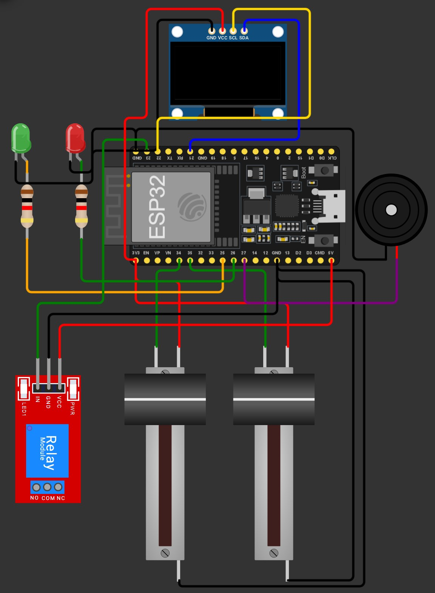
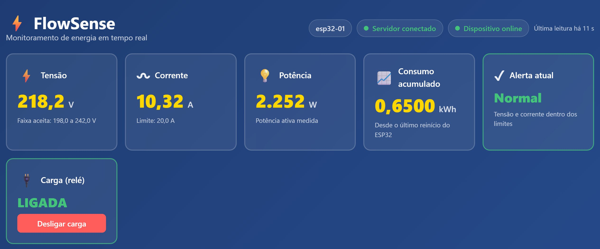
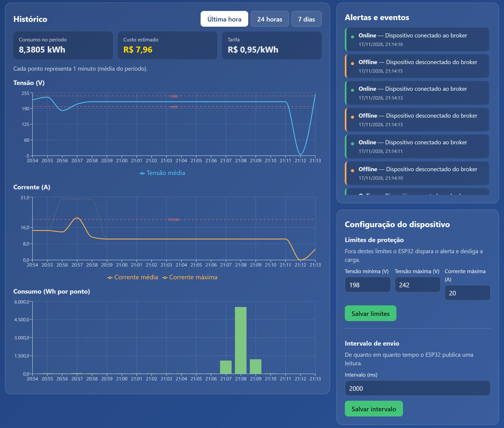

Em residências, pequenos comércios e empresas, o consumo de energia elétrica só é conhecido quando a conta chega, no fim do mês. Não se sabe em quais horários ou com quais equipamentos o gasto acontece, e oscilações de tensão (picos e quedas) só são percebidas depois que um aparelho queima. Falta visibilidade em tempo real e, principalmente, um aviso antes do prejuízo.
O FlowSense é um medidor conectado. Um ESP32 lê continuamente a tensão e a corrente de um circuito, calcula a potência instantânea (W) e o consumo acumulado (kWh) e publica as medições por MQTT. Um backend em Spring Boot recebe as mensagens, valida, guarda no MySQL e mantém o histórico. Um dashboard web mostra os valores em tempo real, gráficos por período, custo estimado e a lista de alertas, e permite desligar a carga e ajustar os limites de proteção.
A proteção é decidida no próprio dispositivo, sem depender da internet. Quando a tensão sai da faixa segura ou a corrente passa do limite, o ESP32 alerta na hora (LED vermelho, buzzer intermitente, OLED). Se o problema durar menos de 5 s, como um pico que cai e volta, o alerta some sem desligar nada. Se durar 5 s seguidos, o relé desliga a carga e o buzzer toca sem parar até alguém religar pelo dashboard. Assim, oscilações rápidas não derrubam a instalação, mas uma falha sustentada protege os equipamentos.
O sistema segue as quatro camadas da disciplina (Figura 1): o ESP32 mede e age, a rede leva as mensagens, o backend processa e guarda, e o dashboard mostra tudo ao usuário.
Leitura: a cada 2 s o ESP32 publica a medição no MQTT; o backend valida e salva no MySQL; o dashboard busca os dados pela API e atualiza a tela.
Comando: o usuário clica em Desligar carga; o backend publica o comando no MQTT; o ESP32 recebe e desliga o relé.
Servidor: backend, banco e dashboard rodam em Docker numa VM da Oracle Cloud, com deploy automático pelo GitHub Actions.
O projeto foi montado no simulador Wokwi, como previsto na proposta. Os sensores ZMPT101B (tensão) e SCT-013-000 (corrente) não existem na biblioteca do simulador e foram representados por dois potenciômetros deslizantes ligados às entradas analógicas do ESP32. O restante (relé, LEDs, buzzer e display) é o componente real disponível no Wokwi.

| Componente | Função |
|---|---|
| ESP32 DevKit (ESP32-WROOM-32) | Leitura, cálculo, regra local e Wi-Fi/MQTT |
| Potenciômetro deslizante (×2) | Simulam os sinais do ZMPT101B e do SCT-013-000 |
| Módulo relé 5 V, 1 canal | Liga/desliga a carga |
| LED verde + resistor 1 kΩ | Estado normal |
| LED vermelho + resistor 1 kΩ | Estado de alerta |
| Buzzer | Alarme: intermitente (alerta) ou contínuo (proteção disparada) |
| Display OLED SSD1306 128×64 (I2C, 0x3C) | Valores e estado no próprio aparelho |
| GPIO | Ligado a | Tipo |
|---|---|---|
| 34 | Potenciômetro de tensão (SIG) | Entrada analógica (ADC1) |
| 35 | Potenciômetro de corrente (SIG) | Entrada analógica (ADC1) |
| 23 | Relé (IN) | Saída digital |
| 25 | LED verde (via 1 kΩ) | Saída digital |
| 26 | LED vermelho (via 1 kΩ) | Saída digital |
| 27 | Buzzer | Saída (tom 2 kHz) |
| 21 / 22 | OLED SDA / SCL | I2C |
| 3V3 · 5V · GND | Potenciômetros e OLED (3V3), relé (5V) | Alimentação |
Conversão das leituras. O ADC do ESP32 tem 12 bits (0 a 4095). Na simulação, o valor lido é convertido linearmente para a escala do sensor: tensão = ADC × 300 / 4095 (0 a 300 V) e corrente = ADC × 30 / 4095 (0 a 30 A). Os GPIOs 34 e 35 pertencem ao ADC1, que continua funcionando com o Wi-Fi ligado (o ADC2 não pode ser usado junto com o Wi-Fi no ESP32).
O código fica em um repositório principal com três submódulos, um para cada parte do sistema:
Flow-Sense-Monitor/ ├── wokwi/sketch.ino, libraries.txt # código do ESP32 usado na simulação ├── flowsense-backend/ # Spring Boot (submódulo) │ ├── mqtt/ MqttClienteFlowsense, MqttRoteador │ ├── service/ LeituraService, ConsultaService, ComandoService, EventoService, │ │ ValidadorPayload, CalculadoraConsumo, LimpezaService │ ├── controller/ DispositivoController (API REST) │ ├── entity/ repository/ dto/ exception/ config/ │ └── resources/db/migration/V1__criar_tabelas.sql # Flyway ├── flowsense-frontend/ # React + Vite (submódulo) │ └── src/ components/ (Avisos, Card, ControleRele, Graficos, ListaEventos, Configuracao) │ context/DataContext, hooks/usePolling, services/api, utils/formatacao ├── flowsense-firmware/ # reservado para o hardware físico (submódulo) ├── docker-compose.yml, .env.example # MySQL + backend + dashboard ├── scripts/ simular-esp32.sh, deploy-vm.sh └── .github/workflows/deploy.yml # deploy automático na VM
| Parte | Bibliotecas e ferramentas |
|---|---|
| ESP32 | Arduino core para ESP32 (WiFi, Preferences, Wire, time/NTP), PubSubClient (MQTT), ArduinoJson (JSON), Adafruit SSD1306 e Adafruit GFX (display) |
| Backend | Java 21, Spring Boot 4.1 (Web, Data JPA, Validation), Flyway, MySQL Connector/J, Eclipse Paho MQTT 1.2.5, Lombok, JUnit 5 + Mockito |
| Frontend | React 18, Vite 7, Recharts 2 (gráficos), ESLint |
| Infraestrutura | Docker Compose, MySQL 8.4, nginx, VM Oracle Cloud (Ubuntu 24.04), GitHub Actions |
O loop() não bloqueia: a medição e a regra local rodam a cada volta (≈10 ms), com ou sem rede, e a parte de rede só é tentada quando há Wi-Fi.
| Função | O que faz |
|---|---|
lerSensores() | Lê os dois ADCs, converte para V e A, calcula a potência (zero com o relé aberto) e integra o consumo: kWh += W × Δt. |
avaliarRegraLocal() | Regra de proteção (R2). Classifica a situação (sobrecorrente > sobretensão > subtensão > normal), conta há quanto tempo os valores estão fora da faixa e, após 5 s seguidos, desliga o relé e trava a proteção. Publica um alerta sempre que o estado muda e outro no momento do desligamento. |
atualizarSaidas() | LED verde/vermelho e buzzer: intermitente (300 ms) durante o alerta e contínuo com a proteção disparada. |
publicarLeitura() / publicarAlerta() | Montam o JSON com ArduinoJson e publicam nos tópicos leituras e alertas. |
aoReceberComando() | Trata {"rele"}, {"limites"} e {"intervalo"}; recusa valores fora da faixa física; grava limites e intervalo na flash (Preferences) e confirma publicando uma leitura. |
conectarMqtt() | Conecta com Last Will (status = offline, retido), publica online e assina comandos. Tenta de novo a cada 5 s se cair. |
atualizarOled() | Mostra Wi-Fi/MQTT, V, A, W, kWh, estado do relé, alerta e a contagem regressiva até o desligamento. |
avaliarRegraLocal).Recepção MQTT. MqttClienteFlowsense mantém a conexão com o broker (reconexão automática) e entrega cada mensagem ao MqttRoteador, que separa o tópico, descarta dispositivos fora da lista FLOWSENSE_DISPOSITIVOS, mensagens acima de 2 KB e JSON inválido, sem derrubar o serviço. O ValidadorPayload confere tipo e faixa de cada campo.
Armazenamento. O LeituraService sobrescreve a linha do dispositivo em leitura_atual, acumula médias, mínimos, máximos e consumo do minuto em historico_resumido e grava em eventos_importantes os alertas, as mudanças online/offline e os comandos. O consumo do período é a soma das diferenças positivas de kWh; quando o valor diminui (ESP32 reiniciou), a leitura conta como recomeço e nunca gera consumo negativo (CalculadoraConsumo). Um agendamento diário apaga dados com mais de 90 dias.
API e erros. O DispositivoController expõe a API REST (Seção 5). Os comandos usam Bean Validation e exigem o cabeçalho X-API-Key. O GlobalExceptionHandler devolve erros em JSON padronizado: 400 (valor inválido), 401 (sem chave), 404 (dispositivo desconhecido) e 503 (backend sem conexão com o broker).
Dashboard. Comunica-se com o backend apenas por HTTP. O hook usePolling busca a leitura atual a cada 2 s, os eventos a cada 5 s e o histórico a cada 30 s. O estado é mostrado por cores (verde normal, vermelho alerta, cinza dado antigo), faixas de aviso (servidor fora, dispositivo offline, alerta e proteção disparada) e confirmação antes de ligar ou desligar a carga (Figuras 4 e 5).


O ESP32 usa MQTT sobre Wi-Fi; o dashboard usa HTTP (API REST) com o backend. A escolha do MQTT considerou os quatro critérios pedidos:
| Critério | Justificativa |
|---|---|
| Alcance | O medidor fica no quadro de energia de uma casa ou comércio, onde já existe Wi-Fi (dezenas de metros em ambiente interno). Bluetooth/BLE teria alcance menor e exigiria um gateway para chegar à internet. |
| Consumo | O Wi-Fi gasta mais que o BLE, mas o FlowSense é alimentado pela própria rede elétrica que mede, então operar com bateria não é requisito. O MQTT ainda economiza: a conexão fica aberta e cada mensagem tem cabeçalho de poucos bytes, sem o custo de abrir uma requisição HTTP a cada leitura. |
| Taxa de dados | Uma leitura tem cerca de 220 bytes a cada 2 s (≈ 1 kbit/s), muito abaixo da capacidade do Wi-Fi. O modelo publicação/assinatura permite que o backend receba as leituras e, ao mesmo tempo, envie comandos ao dispositivo a qualquer momento, sem consultas periódicas. |
| Custo | O ESP32 já tem Wi-Fi integrado (nenhum módulo extra) e o broker público broker.hivemq.com é gratuito e acessível tanto pelo Wokwi quanto pelo backend. Pode ser trocado por um broker próprio (ex.: Mosquitto) mudando só o endereço. |
Recursos do MQTT usados no projeto: QoS 1 nos comandos, alertas e status (entrega garantida), QoS 0 nas leituras periódicas (uma perdida é substituída 2 s depois), mensagem retida e Last Will no tópico status, para o backend saber na hora quando o dispositivo cai.
| Tópico | Quem publica | Quando | Conteúdo |
|---|---|---|---|
flowsense/{id}/leituras | ESP32 | a cada 2 s (configurável) | JSON com a leitura completa |
flowsense/{id}/alertas | ESP32 | quando o alerta muda e no desligamento | JSON com tipo, valores e relé |
flowsense/{id}/status | ESP32 / broker | ao conectar / quando cai | online ou offline (retido, LWT) |
flowsense/{id}/comandos | backend | quando o usuário age no dashboard | JSON com o comando |
| Campo | Tipo | Significado |
|---|---|---|
dispositivo | texto | identificador do ESP32 (deve bater com o tópico) |
tensao, corrente | número | V (0–300) e A (0–30) |
potencia, kwh | número | W instantâneo e consumo acumulado desde que o ESP32 ligou |
rele | "ON" | "OFF" | estado da carga |
alerta / tipo | texto | NORMAL, SOBRETENSAO, SUBTENSAO ou SOBRECORRENTE |
limites | objeto | tensaoMin, tensaoMax, correnteMax em uso |
intervalo | número | ms entre leituras (500–60000) |
timestamp | número | horário Unix (UTC) via NTP; 0 antes de sincronizar (o backend usa o horário do servidor) |
Mensagens capturadas do broker em 17/11/2026, com a simulação do Wokwi em execução (mosquitto_sub -t "flowsense/esp32-01/#" -v):
# leitura normal (21:07:06, horário de Brasília) flowsense/esp32-01/leituras {"dispositivo":"esp32-01","tensao":218.17,"corrente":10.32,"potencia":2252.01,"kwh":0.50289,"rele":"ON","alerta":"NORMAL","limites":{"tensaoMin":198,"tensaoMax":242,"correnteMax":20},"intervalo":2000,"timestamp":1794960426} # subtensão detectada: alerta na hora, relé ainda ligado (relógio ainda não sincronizado → timestamp 0) flowsense/esp32-01/alertas {"dispositivo":"esp32-01","tipo":"SUBTENSAO","tensao":0.00,"corrente":0.00,"rele":"ON","timestamp":0} # 5 s depois, ainda fora da faixa: a proteção desliga o relé e publica de novo flowsense/esp32-01/alertas {"dispositivo":"esp32-01","tipo":"SUBTENSAO","tensao":0.00,"corrente":0.00,"rele":"OFF","timestamp":1794960763} flowsense/esp32-01/status online
Comandos aceitos pelo ESP32 (publicados pelo backend em comandos):
{"rele":"OFF"}
{"limites":{"tensaoMin":200,"tensaoMax":240,"correnteMax":15}}
{"intervalo":5000}
| Método e rota | Função |
|---|---|
GET /api/dispositivos | dispositivos configurados e se estão online |
GET /api/dispositivos/{id}/leitura-atual | última leitura, relé, alerta, limites, intervalo |
GET /api/dispositivos/{id}/historico?de=&ate= | pontos por minuto para os gráficos |
GET /api/dispositivos/{id}/consumo?de=&ate= | kWh do período e custo estimado (R$) |
GET /api/dispositivos/{id}/eventos?limite= | alertas e eventos mais recentes |
POST /api/dispositivos/{id}/rele | {"estado":"ON"|"OFF"} · exige X-API-Key |
PUT /api/dispositivos/{id}/limites | novos limites · exige X-API-Key |
PUT /api/dispositivos/{id}/intervalo | novo intervalo · exige X-API-Key |
| O que foi testado | Como | Resultado |
|---|---|---|
| Regras do backend | 40 testes automatizados (JUnit 5 + Mockito) em 6 classes: validação de leituras, alertas e comandos; cálculo de consumo com reinício do ESP32; roteamento MQTT (JSON quebrado, tópico errado, dispositivo não autorizado, mensagem > 2 KB); agrupamento do histórico; horário do servidor quando timestamp = 0. | 40/40 passando, também no CI do GitHub a cada push. |
| Frontend | ESLint e build de produção (Vite) no CI. | Sem erros. |
| Fluxo ponta a ponta sem o Wokwi | Script scripts/simular-esp32.sh publica leituras e alertas no broker; conferidos a API, o banco e o dashboard. | Dados aparecem no dashboard em até 2 s; alertas viram eventos. |
| Regra local dos 5 s (R2) | No Wokwi: tensão abaixo de 198 V por menos de 5 s, depois por mais de 5 s; mensagens capturadas no broker (Seção 5). | Pico curto: só alerta. Após 5 s: relé desligado e buzzer contínuo; com a tensão já normal (217 V), o relé continuou desligado até o comando de religar. |
| Comandos (relé, limites, intervalo) | Botões do dashboard; conferência do tópico comandos e da leitura de confirmação do ESP32. | Estado confirmado no dashboard após a leitura seguinte. |
| Erros da API | Chamadas sem chave, com valores fora da faixa, dispositivo inexistente e broker desconectado. | 401, 400, 404 e 503 com mensagem em JSON. |
| Funcionamento sem internet | Simulação com o Wi-Fi desconectado. | Medição, OLED, LEDs, buzzer e proteção continuam funcionando. |
| Deploy | Push no repositório principal dispara o GitHub Actions, que atualiza a VM e confere a API. | Execução concluída com sucesso; dados do banco preservados. |
| Falha | Causa | Correção |
|---|---|---|
| O relé não desligava em subtensão. | Os eventos gravados no banco mostravam SUBTENSAO com o relé ligado e encerrado 2 s depois. O Wokwi estava rodando uma versão antiga do sketch, em que só a sobrecorrente abria o relé. | Versão atualizada do sketch carregada no Wokwi; o teste foi repetido e o desligamento conferido pelos alertas com "rele":"OFF". |
| O dispositivo aparecia online e offline várias vezes por segundo. | Duas abas com a mesma simulação usam o mesmo client ID no broker, que derruba uma conexão a cada vez que a outra entra (visível nos eventos da Figura 5). | Procedimento de rodar apenas uma simulação por vez; melhoria futura: client ID único por sessão. |
| O dashboard mostrava alerta vermelho com o dispositivo offline. | A faixa de alerta usava a última leitura recebida, mesmo antiga. | A faixa de alerta só aparece com o dispositivo online; offline, o aviso informa o último alerta como dado antigo. |
| Eixo do gráfico com valores como 221,30000000000007. | Erro de ponto flutuante exibido sem formatação. | Formatação dos eixos e do domínio do gráfico. |
| Dashboard inacessível pela internet na porta 8088. | A Security List da Oracle Cloud bloqueava a porta. | Dashboard servido pelo nginx da VM na porta 80, sem abrir portas novas. |
.env, listado no .gitignore. O repositório tem apenas o .env.example, com valores de exemplo.docker-compose.yml não sobe sem DB_PASSWORD, DB_ROOT_PASSWORD e FLOWSENSE_API_KEY definidas.Wokwi-GUEST, sem senha, e broker público).| Risco | Risco no FlowSense | O que foi feito | Limitação |
|---|---|---|---|
| I1 Senhas fracas ou fixas no código | Senhas do banco e da API irem para o GitHub junto com o código. | .env fora do Git; senhas geradas na VM; compose exige as variáveis. | — |
| I2 Serviços de rede inseguros | Banco e backend ficarem acessíveis pela internet. | MySQL e backend só em 127.0.0.1; apenas a porta 80 aberta; banco acessado por túnel SSH. | Sem HTTPS no dashboard (acesso por IP). |
| I3 Interfaces do ecossistema inseguras | Qualquer pessoa chamar a API e desligar a carga. | Comandos exigem X-API-Key; CORS restrito; validação de todos os campos; erros sem detalhes internos. | A chave fica embutida no dashboard; não há login de usuário. |
| I4 Atualização insegura | Firmware ser trocado por um de fonte não confiável. | Sem OTA: não há canal de atualização remota a ser atacado. | Atualização exige acesso à placa. |
| I5 Componentes desatualizados | Uso de bibliotecas com falhas conhecidas. | Versões atuais (Spring Boot 4.1, React 18, MySQL 8.4); CI compila tudo a cada push. | Sem varredura automática de dependências. |
| I6 Privacidade | Consumo revela a rotina da casa. | Dados guardados só na VM do grupo; retenção de 90 dias com limpeza diária. | Broker público pode ser lido por terceiros. |
| I7 Transferência e armazenamento inseguros | Alguém publicar mensagens falsas no broker público. | Backend aceita só os IDs configurados, confere o ID do payload com o do tópico, limita a 2 KB e valida faixas; ESP32 recusa limites fora da faixa física. | Broker sem TLS nem autenticação: alguém pode publicar comandos direto no tópico. |
| I8 Falta de gerenciamento | Não saber se o dispositivo caiu. | Status com Last Will; eventos online/offline; aviso de offline no dashboard. | — |
| I9 Configurações padrão inseguras | Containers rodando como root; portas padrão abertas. | Backend roda com usuário sem privilégios; limites de memória; chave de deploy restrita a um único script. | — |
| I10 Proteção física | Desativar a proteção derrubando a internet. | A regra de proteção roda no ESP32 e continua funcionando sem rede. | Acesso físico à placa permite trocar o firmware. |
127.0.0.1 da VM (assim como a do backend), e o acesso é feito por túnel SSH. Nenhuma porta além da 80 foi aberta na nuvem.restrict,command=… no authorized_keys), sem terminal nem túneis.Todos os comandos enviados pela API exigem a chave no cabeçalho X-API-Key, comparada em tempo constante pelo backend; sem ela a resposta é 401. O cliente MQTT do backend já suporta usuário, senha e TLS (MQTT_USER, MQTT_PASSWORD, MQTT_TLS), o que permite migrar para um broker autenticado sem mudar o código. O broker público foi mantido porque é o que o Wokwi gratuito alcança com facilidade; essa é a principal limitação de segurança do projeto.
O FlowSense cumpre a proposta aprovada: mede tensão e corrente, decide localmente quando proteger a carga, transmite os dados por MQTT, guarda o histórico e apresenta tudo em um dashboard e no próprio dispositivo. Os cinco requisitos são atendidos: sensores e atuadores reagindo às leituras (R1), regra dos 5 s executada no ESP32 sem internet (R2), MQTT sobre Wi-Fi justificado (R3), payload JSON documentado com mensagens reais (R4) e estado visível no dashboard, no OLED, nos LEDs e no buzzer (R5).
O grupo utilizou o assistente Claude (Anthropic), por meio da ferramenta Claude Code, como apoio ao desenvolvimento. Foram produzidos com esse apoio:
docker-compose, a implantação na VM, o pipeline de CI/CD no GitHub Actions e o script de simulação;A proposta, a escolha do tema e dos componentes, o circuito no Wokwi, as regras de funcionamento e a validação final do sistema foram feitos pelo grupo.
Como o resultado foi verificado: execução dos 40 testes automatizados do backend e do lint/build do frontend, localmente e no CI; testes ponta a ponta com o script de simulação e com o Wokwi, conferindo as mensagens no broker, os registros no banco e o dashboard; comparação de cada funcionalidade com a proposta aprovada; e leitura e discussão do código pelos integrantes, para que todos consigam explicar qualquer parte na defesa.